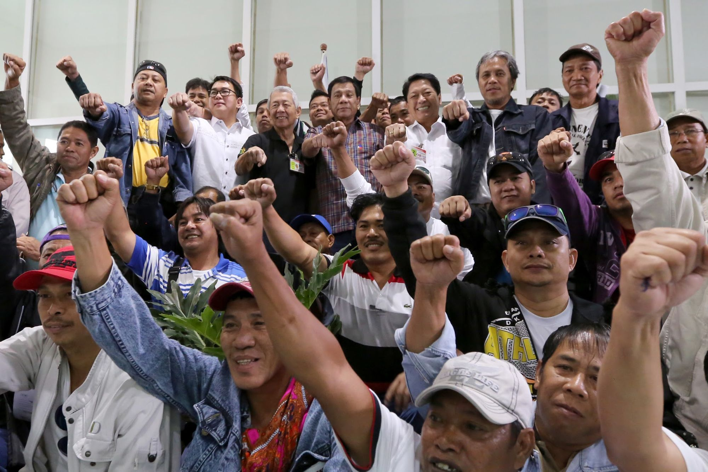
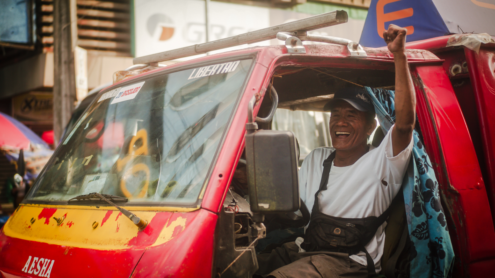
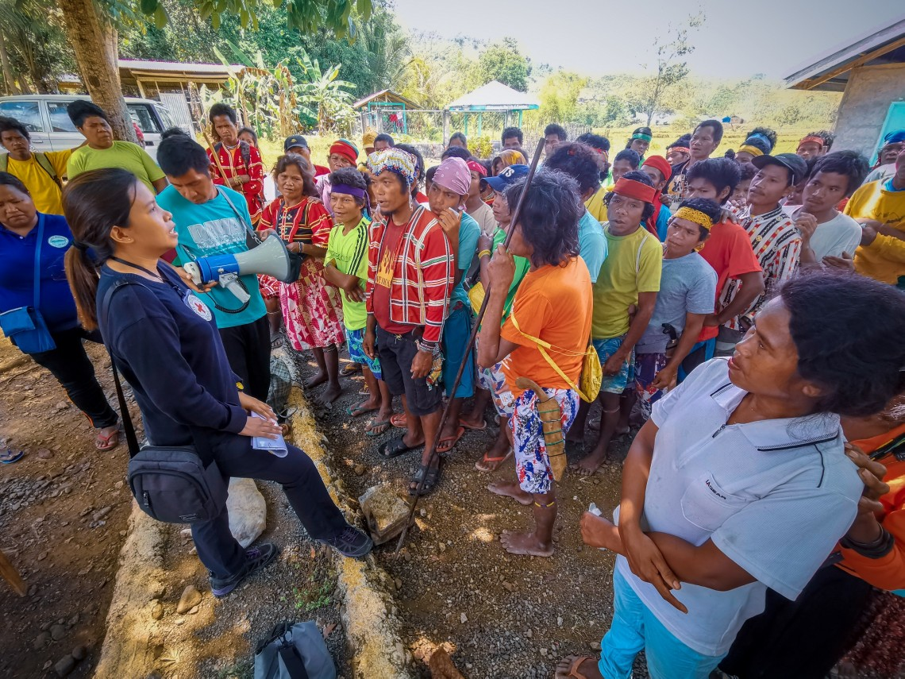
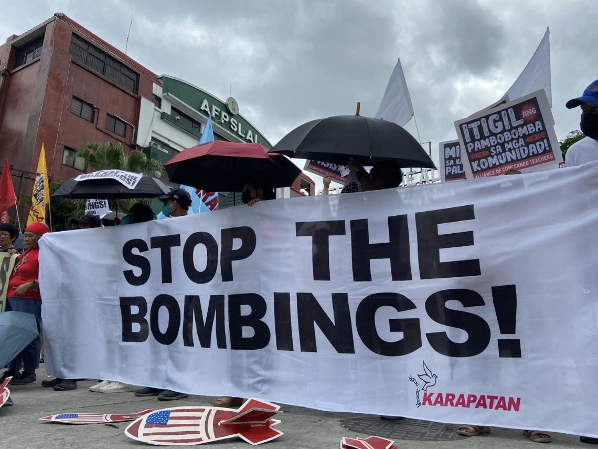

+270908183
Our Blog
Latest news & articles directly from our blog
Karapatan salutes Luis Teodoro, Staunch Human Rights Defender and Press Freedom Fighter
Karapatan sends its deepest condolences to the family, friends and colleagues of veteran journalist, human rights defender and staunch press freedom fighter Prof. Luis Teodoro, who died of a heart attack on March 13 at the age of 81.

KARAPATAN on International Labor Day 2024
On International Labor Day 2024, KARAPATAN joins thousands of workers who marched to the streets to demand higher wages, job security and the recognition of their right to unionize, among others, and raise calls to stop the attacks against workers and the people under the Marcos Jr. government.

KARAPATAN supports jeepney drivers’ Transport Strike
KARAPATAN expresses its staunchest solidarity with the striking jeepney drivers and operators led by Piston who are airing their grievances ahead of the big gathering of workers’ groups on May 1, 2024. Jeepney drivers and operators have been opposing the Marcos Jr. government’s jeepney phaseout scheme masquerading as a jeepney modernization program.

Rights group decries recent rights, IHL violations in Bukidnon
KARAPATAN condemns the series of grave violations of human rights and International Humanitarian Law (IHL) perpetrated by state forces in Bukidnon. On April 10, 2024, witnesses from the locality reported that former UP student turned New People’s Army guerrilla Kaliska Dominica Peralta was accosted unarmed by elements of the 48th Infantry Battalion of the Philippine Army in Purok 8, Barangay Butong, Quezon, Bukidnon.

KARAPATAN condemns Bombings, Military Operations in Abra and Ilocos Sur
KARAPATAN condemns the intensified military operations in the towns of Pilar, Abra and Sta. Maria, Ilocos Sur which have led to the physical and economic displacement of residents in the affected areas. According to reports, the AFP’s heightened operations have resulted in at least five armed clashes between the military and the New People’s Army (NPA) since January of this year.

Karapatan remembers Rene Saguisag
Karapatan extends its deepest condolences to the family, friends and colleagues of Atty. Rene Saguisag, who died on April 24, 2024 at the age of 84. The human rights community remembers Atty. Saguisag as a staunch nemesis of dictatorship. He was one of the courageous lawyers who founded the Movement of Attorneys for Brotherhood, Integrity and Nationalism (MABINI) which provided legal services to political prisoners during martial law.